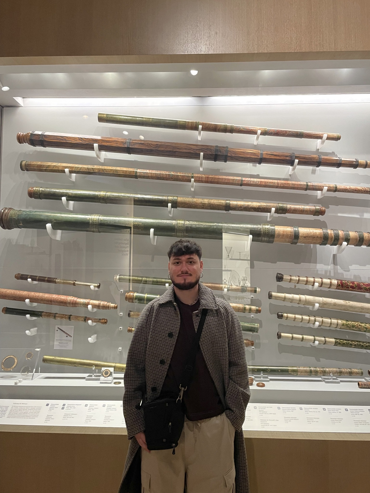
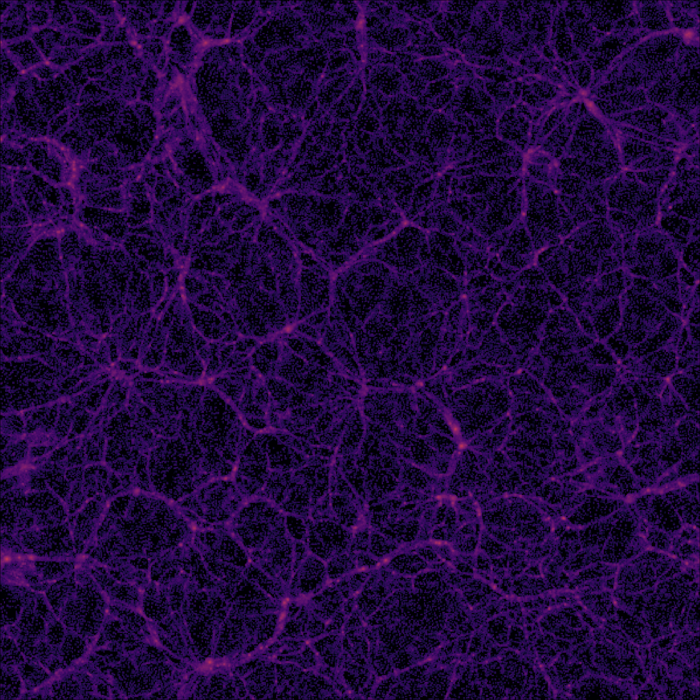

Tidal disruption events
I am interested in the physical mechanisms that govern tidal disruption events, from the initial encounter to the redistribution of energy and angular momentum in the surrounding material.
PhD Student in Astrophysics
Doctorado en Ciencias Físicas
Universidad Técnica Federico Santa María (USM)
Pontificia Universidad Católica de Valparaíso (PUCV)
Valparaíso, Chile

About me
I am a PhD student in Astrophysics working at the intersection of computational modeling and high-energy astrophysical phenomena. My current research focuses on hydrodynamical simulations of tidal disruption events and the long-term signatures they can leave in disk-like systems.
Before my PhD, I worked on extragalactic astrophysics and the internal structure of dark-matter halos. That background shaped the way I approach problems: connecting numerical models, physical interpretation, and astrophysical observables.
Research
I study how tidal disruption events reshape disk-like astrophysical systems, and what physical traces these encounters may leave behind across different environments.
I am interested in the physical mechanisms that govern tidal disruption events, from the initial encounter to the redistribution of energy and angular momentum in the surrounding material.
My work explores how disks respond to violent dynamical events in different astrophysical contexts, including systems inspired by protoplanetary and AGN-like environments.
I aim to connect dynamical evolution with interpretable physical signatures, identifying which structures and timescales are most informative about the history of the interaction.
Numerical work
My numerical work focuses on hydrodynamical simulations of tidal disruption events interacting with pre-existing disks. I study how the encounter redistributes energy and angular momentum, reshapes the disk structure, and leaves short- and long-term dynamical imprints on the system.
This work aims to build a physical framework for understanding how violent transient events can alter disks across different astrophysical environments, from protoplanetary disks to AGN-like systems.

Undergraduate thesis
My undergraduate thesis studied the internal structure of dark-matter halos using high-resolution cosmological hydrodynamical simulations. I analyzed 22,999 dark-matter density profiles from IllustrisTNG50-1, focusing on their inner slopes and their connection with galaxy properties, environment, and redshift evolution.
The results highlight the importance of baryonic physics in shaping the central structure of halos, providing a useful framework for interpreting observations of galaxies and clusters within the ΛCDM cosmological model.
View undergraduate thesis (in Spanish)Teaching
During my undergraduate studies, I worked as a teaching assistant in several courses. One of the most meaningful experiences was preparing a complete set of conceptual tutorials for the course:
Teoría de Discos de Acreción, Fundamentos Teóricos, Simulaciones Numéricas y Conexión Observacional.
The material consists of nine tutorials, combining conceptual discussion with exercises designed to connect theoretical foundations, numerical modeling, and observational motivation.
View teaching compendium · Spanish version9 tutorial notes · conceptual exercises · numerical perspective
Contact
I am always happy to connect about astrophysics, numerical simulations, accretion disks, tidal disruption events, and future collaborations.